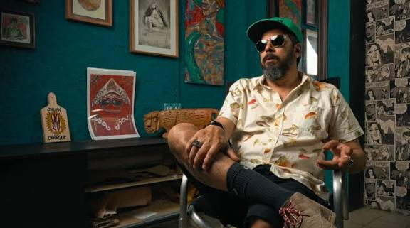
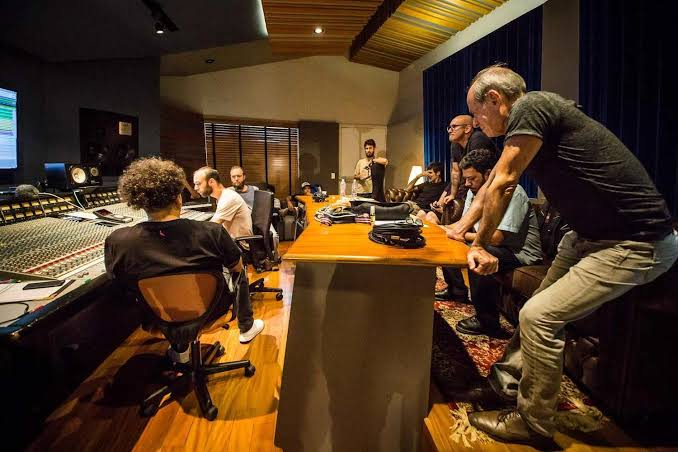

O som em imagens
Seis fotos: shows, uma entrevista e momentos fora do palco.
No palco


Outros momentos



Bossa Nostra
Assista ao clipe de Bossa Nostra e veja a banda em movimento.
Nação Zumbi, Bossa Nostra.
Se o vídeo não carregar, assista pelo YouTube.